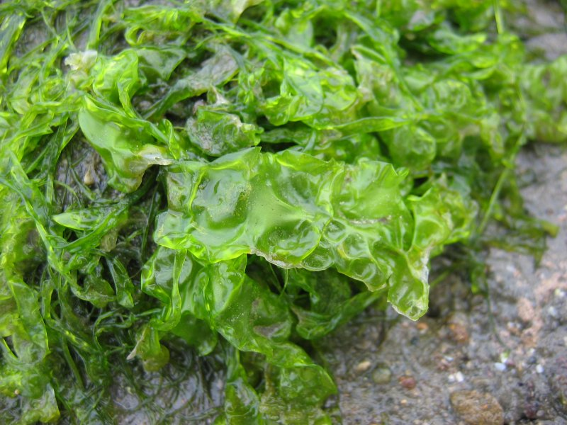

Водорості
Водорості - гетерогенна група еукаріотів, що охоплює кілька різних груп відносно простих за структурою живих організмів, які отримують необхідну для життєдіяльності енергію шляхом фотосинтезу, мешкають переважно у водному середовищі чи пристосувались до життя у ґрунті та інших наземних місцях зростання.
Загальні відомості
Водорості — поліфілетична група організмів, які об'єднані за такими ознаками: наявність фотосинтетичних пігментів, що визначають їх різноманітне забарвлення, та здатність до оксигенного фотосинтезу. Окрім того, до водоростей включають деякі безколірні організми, що вторинно втратили фотосинтетичні пігменти (теорія ендосимбіозу) та, відповідно, здатність до фототрофного живлення, проте мають з водоростями близьку генетичну спорідненість. Деякі водорості здатні до гетеротрофії, як осмотрофно (поверхнею клітини), так і шляхом активного захоплення їжі (деякі евгленові, динофітові).
Цитологія
Цитологічні ознаки водоростей є цілком типовими для інших еукаріот (наявність ядра, комплексу Ґольджі, мітохондрій). Разом з тим вони мають специфічні ознаки, що властиві лише рослинним (наявність клітинної оболонки, хлоропластів, вакуолей та ін.) чи лише тваринним організмам (руховий апарат, центріолі). Синьозелені водорості за будовою нагадують бактерії, разом з якими їх відносять до без'ядерних (прокаріотичних) організмів.
До цитологічних ознак, що є систематичними ознаками на рівні відділів, належать такі:
- ознаки, що відображують спорідненість таксонів за клітиною-господарем (покриви, ядерний апарат);
- система мікротрубочкових органел
- мітохондріальний апарат.
Розмноження
Розмноження у водоростей відбувається двома шляхами: статевим та нестатевим. Відповідно при нестатевому розмноженні дочірні особини успадковують такий геном, що є ідентичним до батьківського геному, за винятком мутаційних процесів. При статевому розмноженні дочірні геноми відрізняються від батьківських, через те, що утворенню нової генерації передує процес кросинговеру. Нестатеве розмноження водоростей умовно можна поділити на два типи:
- споруляція розмноження за допомогою спеціалізованих клітин (спор)
- вегетативне (частиною талому)